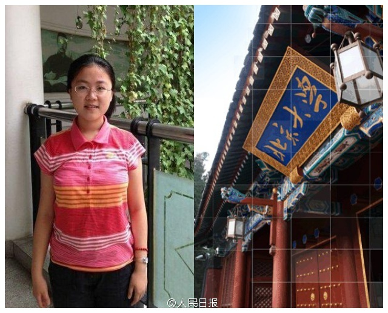

//@严锋:不建议仿效，复读其实是一件很可怕的事情，非常无聊。高考这么残酷的事，一之为甚，岂可再乎！我当年自制力是无敌了，但第二年也很难集中精神复习，天天打牌。考得好纯粹是因为开挂了。//@铁叫子乐和手札: 20年前还有一例，复读后还是状元的，而且成色更好——江苏状元，他就是@严锋 教授@人民日报:【太彪悍了！辽宁文科#状元复读又是状元#！】去年辽宁高考文科状元刘丁宁入读香港大学一个月后,放弃72万元全额奖学金，退学回到本溪高中复读。希望追求更纯粹的国学，梦想进入北大中文系。今年，她以666分再次拿到辽宁省高考文科最高分，第二次获辽宁高考状元！“学渣”们，一起颤抖吧！ 